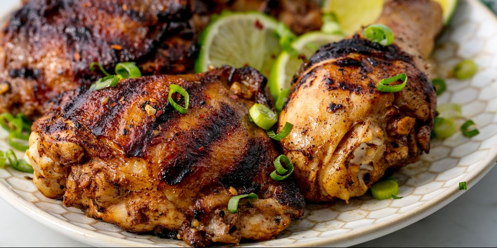

Grilled Jerk Chicken

Description
Jerk chicken, a spicy grilled-meat dish mostly associated with Jamaica but common throughout the Caribbean.
Jerk refers to a style of cooking in which the main ingredient—which most often is chicken
Ingredients
Steps
- In a food processor, combine the onion, scallions, chiles, garlic, five-spice powder, allspice, pepper, thyme, nutmeg and salt; process to a coarse paste. With the machine on, add the the soy sauce and oil in a steady stream. Pour the marinade into a large, shallow dish, add the chicken and turn to coat. Cover and refrigerate overnight. Bring the chicken to room temperature before proceeding.
-
Step 2
Light a grill. Grill the chicken over a medium-hot fire, turning occasionally, until well browned and cooked through, 35 to 40 minutes. (Cover the grill for a smokier flavor.) Transfer the chicken to a platter and serve.